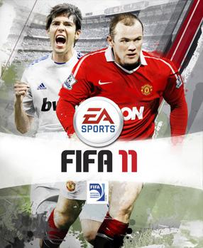
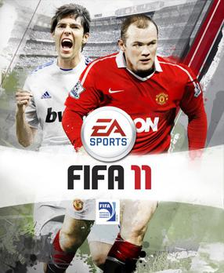

Descarga FIFA 11 para pc con emulador ppsspp

 

FIFA regresa un año más a PS3 incluyendo todas las selecciones y varias ligas con sus equipos al completo. En esta edición 11, se apuesta por diferenciar más a los jugadores, incluyendo un sistema llamado "Personality Plus" que le da a cada estrella características propias que influirán en su forma de jugar. También se mejora el sistema de pases, y se replantea el modo carrera, en el que crearemos a un jugador desde cero para convertirlo poco a poco en una estrella.
FIFA 11 es la decimoctava entrega de la serie de videojuegos FIFA de EA Sports. Desarrollado por EA Canada, fue publicado por Electronic Arts en todo el mundo bajo el sello EA Sports el 28 de septiembre de 2010 en América del Norte, el 30 de septiembre de 2010 en Australia y 1 de octubre de 2010 en Europa para todas las plataformas excepto para la Wii. La versión de Wii fue lanzada el 3 de octubre de 2010 en Norteamérica y Europa.1 La versión para Windows es la primera en la serie en usar el mismo motor de juego que se usa en el Xbox 360 y en el PlayStation 3 y es el último juego de la saga en salir en Nintendo DS.
REQUISITOS DE FIFA 11
Los requisitos de FIFA 11 en su versión para PC por fin han sido desvelados. A continuación os dejamos los requisitos recomendados del videojuego de EA Sports para jugarlo en PC:
Requisitos recomendados:
Sistema operativo: Windows XP / 7
CPU: Dual core a 2.4Ghz on
RAM: 2 GB
Gráfica: 256 MB con soporte Shader Model 3.0 y DirectX 9.0c. (ATI RADEON HD 3870 o NVIDIA GEFORCE 8800 GT o superior).
Hacer click debajo:
DESCARGA FIFA 11